Human Before Hardware
Technology changes constantly. Human needs, motivations, fears, and rituals move at a different pace. Great products respect both.
Meet the Architect
For more than two decades, I’ve worked at the intersection of creativity, technology, and systems thinking, helping startups and global organizations transform ambitious ideas into products and experiences people can understand, trust, and embrace.
Along the way, I’ve collaborated with organizations including Ford Motor Company, Disney, 20th Century Fox, Discovery, Google, Microsoft, Publicis Groupe, and pioneering immersive technology companies such as Jaunt and WEVR. Today, I bring that same approach to Sentient Productions, helping electronic artists build intentional, sustainable careers.
The throughline
The most meaningful innovation happens where creativity and engineering meet. Whether designing enterprise software or developing an artist’s career, my work has always been about transforming complexity into clarity and possibility into momentum.
Building what does not exist yet
I’ve always been drawn to the edges of emerging categories, places where technology is evolving faster than the language to describe them. Throughout my career, I’ve helped teams navigate those moments by creating the clarity, systems, and shared understanding needed to move bold ideas forward.
My career began producing interactive television experiences long before streaming became the norm. Since then, I’ve helped shape products spanning Hollywood studios, immersive media, enterprise software, connected vehicles, developer platforms, and emerging technologies, often entering markets before standards, customer expectations, or even common language had fully formed.
Over the years, I’ve worked inside organizations navigating uncertainty, translating emerging technologies into products people could understand and confidently adopt. That work has ranged from global enterprises to pioneering immersive technology startups, where success depended as much on clarity and trust as it did on technical innovation.
Working in Detroit’s automotive industry deepened that perspective. Detroit has always been defined by the relationship between engineering and creativity. From the assembly line to Motown to techno, the city has repeatedly demonstrated that innovation happens when disciplined systems and artistic expression evolve together. That philosophy continues to shape everything I build.
Sentient Productions grew from that belief. Whether I’m helping a software team simplify a complex platform or helping an electronic artist build a sustainable career, the work begins the same way: establish clarity, design systems people can trust, and create experiences that invite participation.
The best ideas succeed when people can understand them, trust them, and see themselves inside them.
Product philosophy
Technology changes constantly. Human needs, motivations, fears, and rituals move at a different pace. Great products respect both.
I look beyond the deliverable to understand the people, processes, incentives, platforms, and dependencies surrounding it. Better systems create better experiences.
A strategy becomes meaningful when people can recognize themselves inside it. Clear narrative transforms complexity into momentum.
When certainty is impossible, make the idea tangible. Rapid experiments replace abstract debate with evidence, learning, and informed decisions.
The best work is never done in isolation. It is built with the people who will create, operate, support, and ultimately live with the outcome.
A technically impressive product that cannot be understood, trusted, or integrated into real behavior is unfinished.
Selected highlights
Mobility + software
Product strategy across autonomous vehicle experiences, software-defined vehicles, connected services, enterprise platforms, developer ecosystems, software distribution, and the transformation toward software-centric mobility.
Immersive media
Helped bring immersive experiences to Meta, HTC Vive, PlayStation, DreamWorks, Discovery, Google Daydream, Microsoft Mixed Reality, Steam, and 20th Century Fox during the early evolution of consumer virtual reality.
Connected entertainment
Designed interactive experiences for FOX, Discovery Channel, STARZ Encore, Lexus, and other national brands during the emergence of connected television and second-screen entertainment.
The working method
Combining systems thinking, product management, storytelling, research, and design to help organizations navigate uncertainty without losing the original vision.
Recognition
Contributed to work recognized with an Interactive Emmy nomination.
Launched experiences across entertainment, gaming, mobility, enterprise software, streaming, and immersive technology ecosystems.
Repeatedly entered spaces before standards, customer expectations, and common product language were fully formed.
Aligned business, design, engineering, production, research, marketing, and creative teams around a shared vision and product direction.
Beyond technology
Technology has always been my profession. Culture has always been my compass.
Outside enterprise product leadership, I’ve spent years producing events, supporting electronic artists, developing creative brands, curating music, and building communities around culture. Those experiences taught me that artists often face many of the same challenges as startups: exceptional work, unclear positioning, fragmented systems, and no roadmap for sustainable growth.
Sentient Productions exists to bridge those worlds. It combines systems thinking, product strategy, storytelling, creative direction, and artist development to help electronic musicians build careers that are easier to understand, easier to support, and resilient enough to evolve over time.
Selected experience
Organizations where I held product, strategy, production, innovation, or experience leadership roles.


A selection of products, platforms, and experiences I’ve helped design, build, and launch throughout my career.



Why Sentient Productions?
Whether you’re building software, launching a company, developing an artist, or exploring an entirely new creative direction, lasting success begins with clarity. Systems give ideas structure. Stories give them meaning. Together, they create momentum.
Sentient Productions was founded on the belief that artists deserve the same level of strategic thinking, intentional design, and long-term systems that have helped shape successful products and organizations. Creative careers shouldn’t rely on luck or constant reinvention. They should be built with purpose.
That’s the work I love.
Let’s Build Something Worth Remembering hello@sentientproductions.com